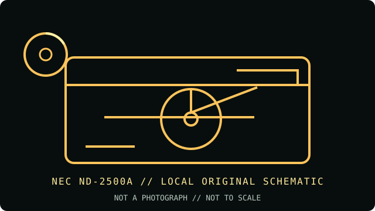

[ INDIVIDUAL COMPONENT // OPTICAL DRIVES ]
NEC ND-2500A
The ND-2500A is an internal dual-format DVD writer. Its supported DVD-R and DVD+R rates top out at 8×; it is not a dual-layer recorder. Confirm the complete model marking and firmware because ND-2500A is distinct from later NEC dual-layer models.

IDENTIFICATION: NEC ND-2500A · Internal 8× DVD±RW/CD-RW writer, 2003–2004 generation. Match the full model and revision marking to the cited archive before applying variant-specific specifications.
Model-specific specifications
| Catalog subcategory | DVD writers |
|---|---|
| Exact product identifier | NEC ND-2500A |
| Generation / product type | Internal 8× DVD±RW/CD-RW writer, 2003–2004 generation |
| DVD/CD media support | Writes DVD-R and DVD+R; rewrites DVD-RW and DVD+RW. Also writes CD-R and CD-RW. Reads DVD-ROM, DVD±R/RW, CD-ROM, CD-R/RW and common CD audio/data formats. No dual-layer DVD recording or DVD-RAM writing is specified for this model. |
| Maximum read/write speeds | Write: DVD±R up to 8×; DVD±RW up to 4×; CD-R up to 32×; CD-RW up to 16×. Read: DVD-ROM up to 12×; CD-ROM up to 40×. Maximum ratings depend on media, firmware, software and recording strategy. |
| Interface and mechanics | Internal 5.25-inch half-height mechanism; 40-pin IDE/ATAPI (PATA), with Master/Slave/Cable Select jumper settings. Not SATA or USB. |
| Host compatibility | Requires a 5.25-inch bay, a PATA/ATAPI controller and compatible power. Legacy PC hosts with supported BIOS/ATAPI and disc-burning software are appropriate; modern SATA-only hosts need a compatible adapter and drivers/software, neither guaranteed by the drive. |
| Variant and use notes | Keep this 8× single-layer ND-2500A separate from later NEC models. Use recording software that supports ATAPI optical drives; set the rear jumper to match the PATA channel. Verify disc recognition and a full readback after burning. |
Compatibility and preservation
Advertised maximum rates are media- and firmware-dependent; they are not a guarantee for aged, damaged or unsupported discs. For archival work, retain the full drive model, firmware, media identifier, write strategy and software version with the image or master.
- Confirm the complete label and PATA jumper position before installing; do not infer capabilities from a related suffix or OEM rebrand.
- Use supported blank media and a compatible recorder application, then verify the completed disc by readback and checksum.
- Handle optical media by its edge or hub, store it in a cool, dry location, and preserve an unmodified original when possible.
Manufacturer and archive sources
- NEC ND-2500A — CDRInfo technical reviewModel-specific media list, rated speeds and ATAPI interface.
- NEC ND-2500 DVD Burner — manual archiveArchived installation/manual reference for the ND-2500 series.
These references document the named model/family; they do not certify a particular used drive, firmware revision or blank-media batch. Confirm exact suffix and region/OEM variant on the hardware label.